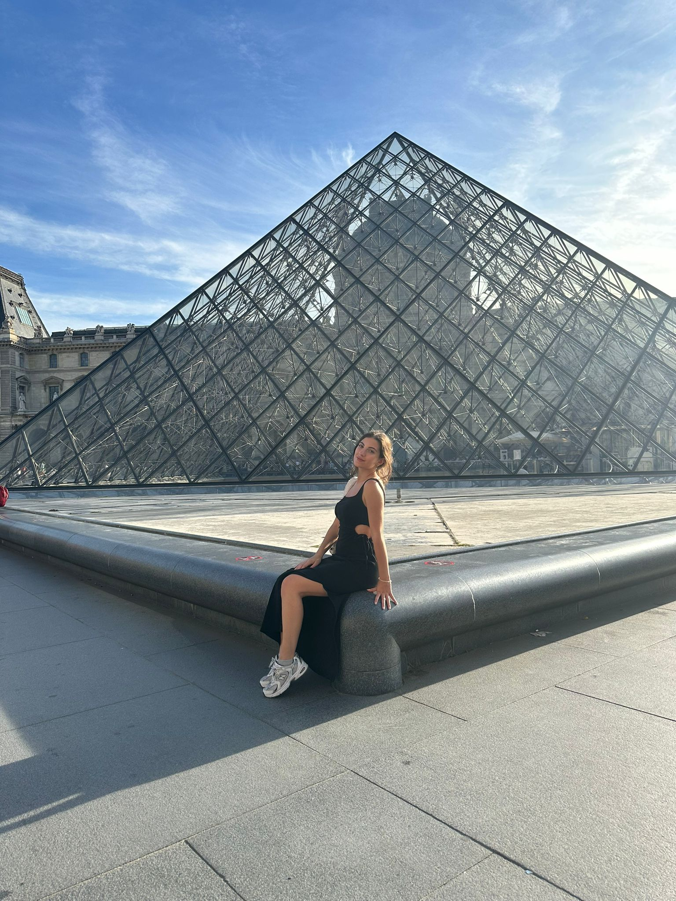
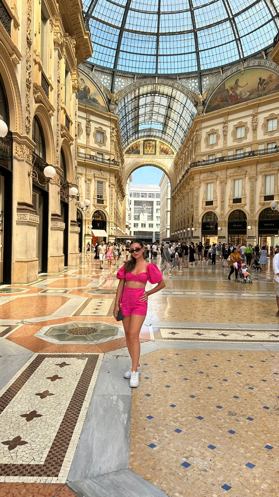

Eyfel Kulesi, Paris. Eyfel Kulesi, Fransiz Devrimi'nin 100.yıl kutlamaları çerçevesinde düzenlenen Expo 1889 Paris Fuarı için özel olarak yapıldı. Aslen 1888 Fuarı için Barcelona'ya yapılması planlanan kulenin, bu fikir reddedilince, Paris'te Seine Nehri'nin kıyısında Champ de Mars'da yapılmasına karar verildi. 2023 Eylül ayında gitme fırsatım oldu. Benim için en büyülendiğim şehir oldu.
Louvre Müzesi, Paris .Louvre Müzesi Fransız İhtilalinden sonra ülkede açılan ilk müzedir. Kapılarını ilk kez 10 Ağustos 1793 tarihinde açan müze, Napolyon Bonapart döneminde genişletilmiştir. En başta içinde 537 parça tarihi eser bulunurken bu sayı 19. ve 20. yüzyıllarda giderek artmıştır. Müze çeşitli nedenlerle 5 yıl kapalı kalmıştır. Eyfel kulesinden yürüyerek de gidebilirsiniz. Parisin ışıltılı sokaklarında yürümekten çok zevk alacağınıza eminim. Yalnız Louvre Müzesine girmek için biletlerinizi aylar öncesinden ayırtmayı unutmayın!
Hollanda'nın Amsterdam,Rotterdam gibi bir çok şehrini ve küçük kasabalarını gezme imkanım oldu. İkinci resimde gördüğünüz yer Rotterdam'da bulunan meşhur Cubic Houses gerçekten küp evlerde yaşayan insanları görünce insan büyülenmeden geçemiyor'
Duomo Katedrali
Milano'nun merkezinde adını verdiği Piazza Del Duomo meydanında bulunur. 11.700 m² yüzey alanı ve 440.000 m³ lük hacimle İtalya Cumhuriyeti'nin en büyük ve 45 metre yüksekliğindeki ana nef ile Vatikan'da bulunan Aziz Petrus Bazilikasından sonra İtalya yarımadasının
Galleria Vittorio Emanuele ii
İtalyan mimar Giuseppe Mengoni tarafından 1865 yılında inşasına başlanmış, 1877'de açılışı yapılmış. İki cam kemerli pasaj devasa bir kubbede birleşiyor. Merkezdeki sekizgen boşlukta cam bir kubbe var. Çarşıdaki zemin nefis mozaiklerle kaplı.